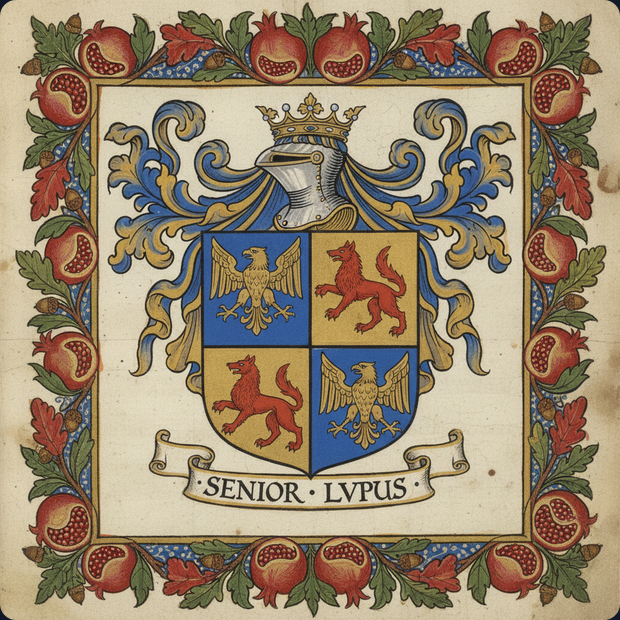

Know all men by these presents, that Martina & Parra Limited is a company of engineering and science, established in London, England, dedicated to the advancement of knowledge and the application thereof to the benefit of mankind — in the tradition of those who, across five centuries, carried the same name through courts, oceans, and continents.
Be it known that the lineage herein represented descends from Abraham Senior, Grand Rabbi of Castile and principal counsellor to Their Catholic Majesties Fernando and Isabel — he who at the Monastery of Guadalupe, in the month of June of the year MCCCCXCII, received baptism under the sponsorship of the King himself, and was thereafter known as Fernando Pérez Coronel, appointed to the Royal Council with voice, vote, and the annual emolument of thirty thousand maravedís.
And be it further known that Dom Manuel I, King of Portugal, Lord of Guinea and of the Conquest, Navigation and Commerce of Ethiopia, Arabia, Persia and India, did confirm in the year MCCCCXCIX at Sintra a grant of fidalguia to Mestre Niculao Coronel, physician to the Royal Court — of the lineage of Abrão Rodrigues Coronel do Reino de Espanha — as it is recorded in the Chancelaria de Dom Manuel I, Livro XVI, folio CVIIIv, preserved in the Arquivo Nacional Torre do Tombo, Lisbon.
This lineage, having endured dispersal and persecution, crossed the seas and established itself in Amsterdam, in Curaçao, and in the Americas — leaving documentary evidence at every step, from the Autos da Fé of the Inquisition of Coimbra to the registers of Beth Haim — until arriving, in the fullness of time, at the present house.
The principal endeavour of this house is the development of Isobar — a process for the generation of electrical energy from pressure differentials, applicable at any scale and in any place where such a differential may be established or maintained. The process is the subject of a patent application before the United Kingdom Intellectual Property Office, filed in the year MMXXVI, under the Green Channel for clean energy technologies.
As our forebears did not yield when the courts of Castile and Portugal demanded it — neither shall this work yield before the weight of convention.